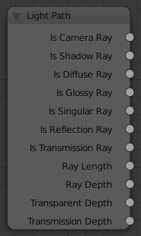

Light Path¶

Light Path Node.
The Light Path node is used to find out for which kind of incoming ray the shader is being executed; particularly useful for non-physically based tricks. More information about the meaning of each type is in the Light Paths documentation.
Inputs¶
This node has no inputs.
Properties¶
This node has no properties.
Outputs¶
- Is 相机 Ray
- 1.0 if shading is executed for a camera ray, 0.0 otherwise.
- Is Shadow Ray
- 1.0 if shading is executed for a shadow ray, 0.0 otherwise.
- Is Diffuse Ray output
- 1.0 if shading is executed for a diffuse ray, 0.0 otherwise.
- Is Glossy Ray
- 1.0 if shading is executed for a glossy ray, 0.0 otherwise.
- Is Singular Ray
- 1.0 if shading is executed for a singular ray, 0.0 otherwise.
- Is Reflection Ray
- 1.0 if shading is executed for a reflection ray, 0.0 otherwise.
- Is Transmission Ray output
- 1.0 if shading is executed for a transmission ray, 0.0 otherwise.
- Ray Length
- Distance traveled by the light ray from the last bounce or camera.
- Ray Depth
Number of times the ray has “bounced”, i.e. been reflected or transmitted on interaction with a surface.
Note
Passing through a transparent shader does not count as a normal “bounce”.
- Transparent Depth
- Returns the number of transparent surfaces passed through.
- Transmission Depth
- Replace a Transmission lightpath after X bounces with another shader, e.g a Diffuse one. This can be used to avoid black surfaces, due to low amount of max bounces.